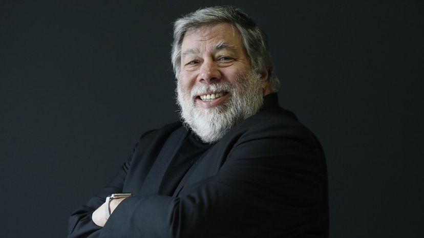

Steve Wozniak

Steve Wozniak co-Founder of Apple
En 1975, Wozniak comenzó a desarrollar la primera computadora de Apple, el Apple I1 que se convirtió en la primera computadora lanzada por Apple cuando él y Jobs comenzaron a comercializarla el año siguiente. Diseñó la Apple II inicialmente en 1977, conocida como una de las primeras microcomputadoras de gran éxito producidas en masa7 mientras Jobs supervisaba el desarrollo de su caja de plástico moldeado en espuma y el primer empleado de Apple, Rod Holt, desarrollaba la fuente de alimentación de conmutación.8 Con el ingeniero de software Jef Raskin, Wozniak tuvo una gran influencia en el desarrollo inicial de los conceptos originales de Apple Macintosh de 1979 a 1981, cuando Jobs se hizo cargo del proyecto tras la breve salida de Wozniak de la empresa debido a un traumático accidente de avión.9 Después de dejar Apple permanentemente en 1985, Wozniak fundó el CL 9 y creó el primer control remoto universal programable, lanzado en 1987. Luego siguió varios otros negocios y empresas filantrópicas a lo largo de su carrera, centrándose principalmente en la tecnología en las escuelas de K-12. A noviembre de 2019, Wozniak ha permanecido como empleado de Apple en un puesto ceremonial desde que se retiró en 1985.
If you want to read more About Steve Wozniak click here